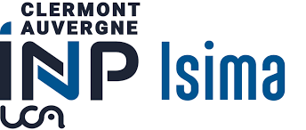

My Profile
I’m a final-year engineering student at ISIMA, specializing in Networks and Cybersecurity. My studies have given me a solid background in infrastructure monitoring, automation, and risk management — with a strong focus on securing IT systems. Passionate about cybersecurity, I enjoy tackling complex challenges and turning them into practical, secure, and efficient solutions.
I’m currently looking for a final-year internship starting in April 2026, where I can apply my skills to help strengthen and optimize information systems in an innovative environment.
Professional Experience
-
Periscope Creation
03/2024 - 09/2024
Infrastructure & Information Systems Security Engineer (Intern)
During my internship at Periscope Creation, I actively contributed to the administration, monitoring, and security of IT infrastructures. I implemented solutions for network monitoring, task automation, and asset management, enhancing overall system reliability and security.
🚀 Key Responsibilities
- Monitoring & Security: Deployment and optimization of Wazuh (IDS), network log analysis (Syslog, WatchGuard), implementation of a secure authentication portal (Keycloak)
- Automation & Infrastructure Management: Administration of Active Directory and JumpCloud, integration of assets via GLPI and FusionInventory, scripting with Bash, PowerShell, and Ansible
- Network & Security: Advanced firewall configuration (WatchGuard, Livebox), VLAN network segmentation, access management with MFA and GPO
- Documentation & Compliance: Updating IT security procedures (PSSI, PCA), raising awareness through phishing simulations and user training
🛠️ Skills & Tools Used
- Monitoring & Security: Wazuh, Syslog, WatchGuard
- Automation: Bash, PowerShell, Ansible
- Infrastructure Management: GLPI, FusionInventory, JumpCloud
- Virtualization & Cloud: VMware, Docker, Rancher
- Network Security: IDS, VLAN, Firewalls, VPN, Active Directory
- Documentation & Compliance: IT Security Policies (PSSI), Business Continuity Plans (PCA), Security Audits
Education
-
 ISIMA – F5 Program: Networks & Cybersecurity
2022 – 2026
Engineering Degree in Networks & Cybersecurity
- SecNumEdu certified program by ANSSI, recognized for excellence in cybersecurity education.
- Developed skills in computer networks: routing, protocols, virtualization, cloud computing, IoT.
- Integrated cybersecurity training: cryptography, secure architecture, pentesting, forensics, risk management.
- Tools & Equipment: Firewalls, VPN, Radius, Business Continuity Plans, IoT platforms, HackRF One, VoIP servers, Cisco hardware.
- Software Development: object-oriented programming, CI/CD, mobile applications, agile methodologies.
- Career paths: network engineer, security architect, CISO, cybersecurity specialist; highly sought-after in IT consulting firms, large corporations, and critical sectors.
-
IPEGI – Preparatory Institute for Engineering Schools, Nouakchott
2020 – 2022
Preparatory Classes for Engineering Schools
- General scientific training
- Advanced mathematics, physics, chemistry, and engineering sciences
- Introduction to computer science and algorithms
- Intensive preparation for engineering school entrance exams
-
Lycée d’Excellence, Nouakchott
2020
High School Diploma (Baccalauréat C – Mathematics & Physics)
- Honors: Très Bien (High Distinction)
- Specialization: Mathematics & Physics
My Projects
Here are some of my most recent projects.

Objectives
Protect web applications against common attacks (injections, XSS, CSRF) while minimizing false positives and latency impact.
Detailed Actions
- Architecture: Deployed ModSecurity as a reverse-proxy (Docker) in front of multiple application backends; integrated into the CI/CD pipeline for automated testing.
- Rules: Enabled OWASP CRS as a baseline, then added custom rules for business-specific cases (upload endpoint exclusions, fine-grained rules for REST APIs).
- Tuning: Collected and analyzed logs for 2 weeks in staging, created whitelists/exceptions, gradually switched to blocking mode.
- Monitoring: Centralized logs via Filebeat → ELK / Grafana for alert correlation and metrics (requests/blocked, false positive rates).
- Testing & Validation: Conducted black-box tests in staging (validation scenarios, non-exhaustive) and load tests to measure latency impact.
Results & Metrics
- Confirmed blocking of injection and XSS attempts in the test environment.
- Progressive reduction of false positives after tuning and targeted exceptions.
- Implemented an operational dashboard showing processed requests, block rates, and average latency.
Skills & Tools Gained
ModSecurity (reverse-proxy & integrated mode), OWASP CRS tuning, log parsing and correlation (ELK/Grafana), application testing and validation, DevOps culture (containerized deployment).

Objectives
Harden the AD infrastructure to reduce identity management attack surface and secure administrative access.
Detailed Actions
- OU Design: Defined a clear organizational structure (OU per service/environment) to enable targeted GPOs and minimal privilege delegation.
- GPO & Hardening: Created standardized GPOs: password policies (length & complexity), account lockout, expiration, deactivation of inactive accounts; configured detailed logging.
- Privilege Management: Separated administrative accounts (break-glass), applied least privilege principle, controlled delegation through groups and roles.
- MFA & Access: Integrated MFA for sensitive access; reviewed services using service accounts.
- Monitoring: Centralized logs via Windows Event Forwarding → SIEM (event correlation, alerts on suspicious behaviors).
- Processes: Implemented a patching process and an incident response playbook for AD compromise scenarios.
Results & Metrics
- Improved access governance: documented permissions and regular audits.
- Faster anomaly detection via SIEM alerts on critical AD events.
- Recovery procedures tested (AD object restore, critical account resets).
Skills & Tools Gained
Active Directory (AD DS), GPO design & hardening, IAM, Windows Server administration, audit & SIEM, patch management procedures, incident response playbook.

Objectives
Redesign the network architecture to improve availability, performance, and security while minimizing downtime, as part of preparation for the CSNA certification, which I successfully obtained.
Detailed Actions
- Design: mapped network flows, implemented logical segmentation via VLANs (e.g., management VLAN, production VLAN, DMZ), and defined trust zones.
- Perimeter Security: deployed Stormshield firewall at the edge with deny-by-default policies, explicit rules for exposed services (HTTPS, restricted management SSH).
- Remote Access: set up site-to-site IPsec VPNs and user VPNs (encrypted tunnels, strong authentication policies, controlled split-tunnel).
- Routing & High Availability: configured OSPF for dynamic routing between sites and redundancy for critical links; implemented granular ACLs to filter inter-VLAN traffic.
- Testing & Cutover: phased migration procedure (staging → rollback plan → production), load testing, and monitoring during cutover.
Results & Metrics
- Segmented network reducing lateral propagation of incidents.
- Encrypted and reliable remote access via VPN; granular firewall rules applied.
- Migration process documented and tested; monitoring in place for latency and availability.
Skills & Tools Gained
VLANs, OSPF, ACL design, IPsec VPN, Stormshield administration, resilient network architecture design, migration procedures & validation testing, and successful preparation for the CSNA certification.
Skills & Expertise
CYBERSECURITY & PENTESTING
Experienced in implementing and managing security solutions such as firewalls (Stormshield, WatchGuard), WAFs (ModSecurity), and IDS/IPS (Wazuh). Skilled in penetration testing using Metasploit, as well as Identity and Access Management (IAM) through Active Directory, JumpCloud, MFA, and SSO. Strong understanding of threats and protective measures to secure information systems.
NETWORKS & SYSTEMS
Proficient in network and system environments: VLAN, OSPF, ACL, RADIUS, DHCP, NAT/PAT, and IPsec VPN. Administration of Windows and Linux systems (clients/servers), including Active Directory integration and rights management. Experience with virtualization via VMware and Hyper-V, as well as deploying Cloud solutions on GCP and Azure.
DEVOPS & AUTOMATION
Experienced in containerization and automation using Docker, Ansible, and GitLab CI/CD. Developed scripts in Bash, Python, and PowerShell to automate administration, deployment, and security tasks. Capable of setting up CI/CD pipelines and optimizing DevOps processes to ensure agility and reliability.
DATABASES
In-depth knowledge of relational and NoSQL databases: MySQL, PostgreSQL, MariaDB, and MongoDB. Experienced in data modeling, management, and security. Able to optimize performance and ensure high availability in critical environments.
PROGRAMMING
Strong skills in development with Python, C++, Bash, and PowerShell. Experienced in algorithm design, security script development, and process automation. Quick to adapt to new languages and technologies to meet diverse needs.
MONITORING & SUPERVISION
Experienced in implementing and using monitoring and supervision tools such as Nagios, Zabbix, Wazuh, and Syslog. Able to quickly detect incidents, prevent vulnerabilities, and ensure system and network availability.
My Certifications
Here are some of the certifications I have earned.
CCNA
Cisco Certified Network Associate
CSNA
Stormshield Network Administrator
Junior Pentester
TryHackMe Certification